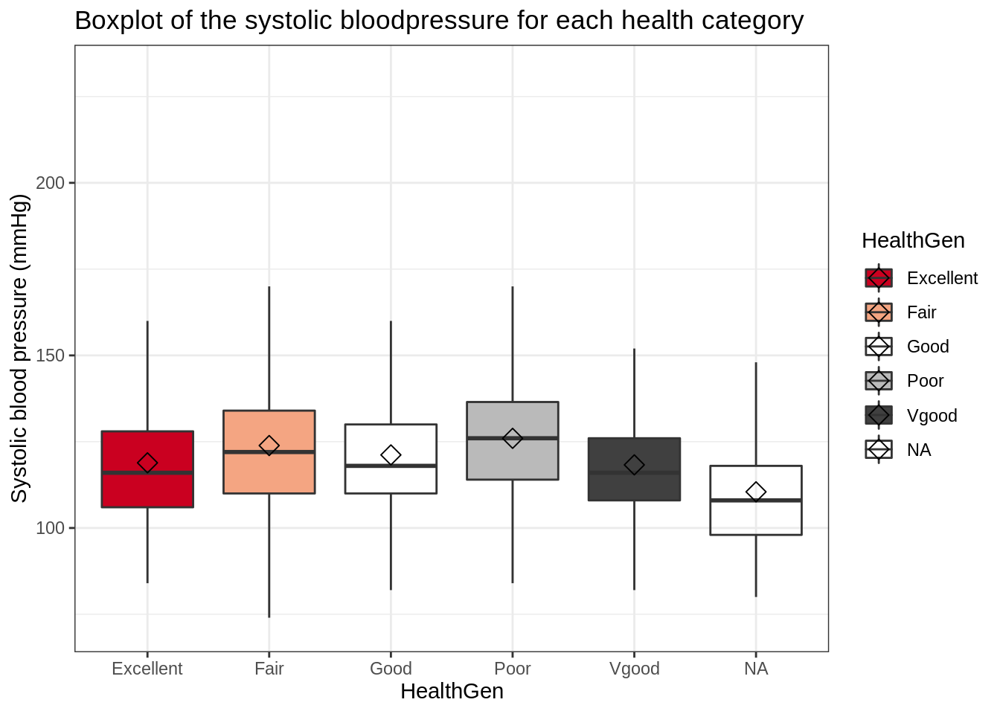
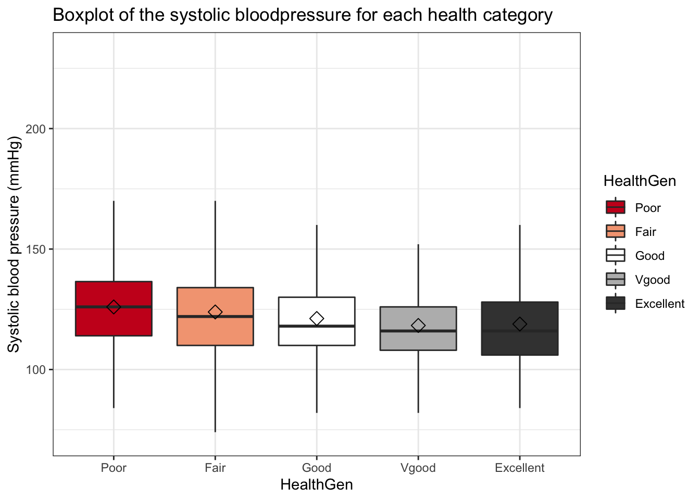
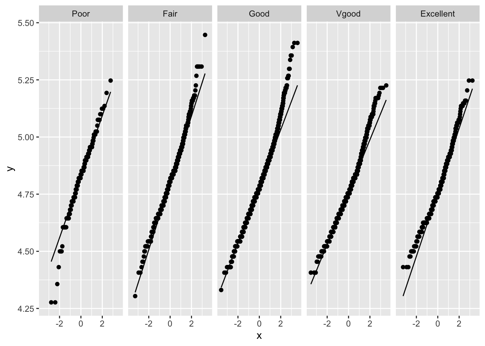

Tutorial 7.3: ANOVA in the NHANES dataset
1 The NHANES dataset
The National Health and Nutrition Examination Survey (NHANES) contains data that has been collected since 1960. For this tutorial, we will make use of the data that were collected between 2009 and 2012, for 10.000 U.S. civilians. The dataset contains a large number of physical, demographic, nutritional and life-style-related parameters.
2 Goal
In the NHANES dataset, one of the columns is named HealthGen. HealthGen is a self-reported rating of a participant’s health in general terms. HealthGen is reported for participants aged 12 years or older. It is a factor with the following levels: Excellent, Vgood, Good, Fair, or Poor.
We want to test whether or not the mean systolic blood pressure value (take column BPSys1) is equal between the five self-reported health categories. To this end, we will use an ANOVA analysis (if the required assumptions are met).
Load the required libraries
library(tidyverse)3 Data import
NHANES <- read_csv("https://raw.githubusercontent.com/statOmics/PSLS21/data/NHANES.csv")
glimpse(NHANES[1:10])## Rows: 10,000
## Columns: 10
## $ ID <dbl> 51624, 51624, 51624, 51625, 51630, 51638, 5164…
## $ SurveyYr <chr> "2009_10", "2009_10", "2009_10", "2009_10", "2…
## $ Gender <chr> "male", "male", "male", "male", "female", "mal…
## $ Age <dbl> 34, 34, 34, 4, 49, 9, 8, 45, 45, 45, 66, 58, 5…
## $ AgeDecade <chr> "30-39", "30-39", "30-39", "0-9", "40-49", "0-…
## $ AgeMonths <dbl> 409, 409, 409, 49, 596, 115, 101, 541, 541, 54…
## $ Race1 <chr> "White", "White", "White", "Other", "White", "…
## $ Race3 <chr> NA, NA, NA, NA, NA, NA, NA, NA, NA, NA, NA, NA…
## $ Education <chr> "High School", "High School", "High School", N…
## $ MaritalStatus <chr> "Married", "Married", "Married", NA, "LivePart…4 Data Exploration
NHANES %>%
ggplot(aes(x = HealthGen, y = BPSys1, fill = HealthGen)) +
scale_fill_brewer(palette = "RdGy") +
theme_bw() +
geom_boxplot(outlier.shape = NA) +
# geom_jitter(width = 0.2,size=0.01) + ## omitted as it makes the plot messy
ggtitle("Boxplot of the systolic bloodpressure for each health category") +
ylab("Systolic blood pressure (mmHg)") +
stat_summary(
fun = mean, geom = "point",
shape = 5, size = 3, color = "black",
)## Warning: Removed 1763 rows containing non-finite values
## (stat_boxplot).## Warning: Removed 1763 rows containing non-finite values
## (stat_summary).
This plot is not ideal; it would be far more intuitive if the health categories were ordered properly (i.e., Poor –> excellent). In addition, we observe a sixth “category” of NA values.
To get a more informative and intuitive visualization, you can:
- Filter out subjects with NA values for
HealthGenorBPSys1 - Set
HealthGento a factor and relevel it to Poor –> Excellent
Hint: The second task can be achieved by using the mutate, as.factor and fct_relevel functions.
NHANES <- NHANES %>%
filter(!is.na(HealthGen), !is.na(BPSys1)) %>%
mutate(HealthGen = as.factor(HealthGen)) %>%
mutate(HealthGen = fct_relevel(HealthGen, c("Poor", "Fair", "Good", "Vgood", "Excellent")))NHANES %>%
ggplot(aes(x = HealthGen, y = BPSys1, fill = HealthGen)) +
scale_fill_brewer(palette = "RdGy") +
theme_bw() +
geom_boxplot(outlier.shape = NA) +
ggtitle("Boxplot of the systolic bloodpressure for each health category") +
ylab("Systolic blood pressure (mmHg)") +
stat_summary(
fun = mean, geom = "point",
shape = 5, size = 3, color = "black",
)
5 ANOVA
To study if the observed difference between the average systolic blood pressure values of the different health groups are significant, we may perform an ANOVA.
5.1 Formulate null and alternative hyoptheses
The null hypothesis of ANOVA states that: \(H0\): The mean systolic blood pressure is equal between the different health groups.
The alternative hypothesis of ANOVA states that: \(HA\): The mean systolic blood pressure for at least one health group is different from the mean systolic blood pressure in at least one other health group.
5.2 Check the assumptions for ANOVA
Before we may proceed with the analysis, we must make sure that all assumptions for ANOVA are met. ANOVA has three assumptions:
- The observations are independent of each other (in all groups)
- The data (BPSys1) must be normally distributed (in all groups)
- The variability within all groups is similar
5.2.1 Assumption of independence
The first assumption is met; there shoud be no specific pattterns of dependence.
5.2.2 Assumption of normality
For the second assumption, we must check normality in each group.
NHANES %>%
ggplot(aes(sample = BPSys1)) +
geom_qq() +
geom_qq_line() +
facet_grid(~HealthGen)
The data does not appear to be normally distributed for each group. It seems to have a heavy right tail. We can perform a log transformation on the data.
NHANES %>%
mutate(BPSys1_log = log(BPSys1)) %>%
ggplot(aes(sample = BPSys1_log)) +
geom_qq() +
geom_qq_line() +
facet_grid(~HealthGen)
While the log transformation improved the distributions somewhat, the data still does not appear to be normally distributed for each group. However, we do have a very large number of observations per group:
## Count the number of observations per treatment
NHANES %>%
count(HealthGen)As such, we may rely on the cental limit theorem. Remember, the cental limit theorem that when the number of observations is sufficiently large (i.e. >100), we will assume that the distribution of the sample mean will approximate a normal distribution, even if the underlying data is not normally distributed.
5.3 ANOVA model
fit <- lm(log(BPSys1) ~ HealthGen, NHANES)
fit_anova <- anova(fit)
fit_anovaprint(paste("Not-rounded p-value:", fit_anova$`Pr(>F)`[1]))## [1] "Not-rounded p-value: 2.99356182478463e-21"The p-value of the ANOVA analysis is extremely significant (p-value = 2.994e-21), so we reject the null hypothesis that the mean egg length is equal between the different bird types. We can say that the mean egg length is significantly different between at least two bird types on the 5% significance level.
Based on this analysis, we do not yet know between which particular bird types there is a significant difference. To study this, we will perfrom the Tuckey post-hoc analysis.
5.4 Post-hoc analysis
library(multcomp, quietly = TRUE)
mcp <- glht(fit, linfct = mcp(HealthGen = "Tukey"))
summary(mcp)##
## Simultaneous Tests for General Linear Hypotheses
##
## Multiple Comparisons of Means: Tukey Contrasts
##
##
## Fit: lm(formula = log(BPSys1) ~ HealthGen, data = NHANES)
##
## Linear Hypotheses:
## Estimate Std. Error t value Pr(>|t|)
## Fair - Poor == 0 -0.015828 0.010971 -1.443 0.57594
## Good - Poor == 0 -0.036762 0.010351 -3.551 0.00300 **
## Vgood - Poor == 0 -0.059415 0.010410 -5.708 < 0.001 ***
## Excellent - Poor == 0 -0.055476 0.011062 -5.015 < 0.001 ***
## Good - Fair == 0 -0.020934 0.005139 -4.074 < 0.001 ***
## Vgood - Fair == 0 -0.043587 0.005256 -8.293 < 0.001 ***
## Excellent - Fair == 0 -0.039648 0.006452 -6.145 < 0.001 ***
## Vgood - Good == 0 -0.022653 0.003797 -5.966 < 0.001 ***
## Excellent - Good == 0 -0.018714 0.005331 -3.511 0.00348 **
## Excellent - Vgood == 0 0.003938 0.005444 0.723 0.94608
## ---
## Signif. codes: 0 '***' 0.001 '**' 0.01 '*' 0.05 '.' 0.1 ' ' 1
## (Adjusted p values reported -- single-step method)confint(mcp)##
## Simultaneous Confidence Intervals
##
## Multiple Comparisons of Means: Tukey Contrasts
##
##
## Fit: lm(formula = log(BPSys1) ~ HealthGen, data = NHANES)
##
## Quantile = 2.6825
## 95% family-wise confidence level
##
##
## Linear Hypotheses:
## Estimate lwr upr
## Fair - Poor == 0 -0.015828 -0.045257 0.013601
## Good - Poor == 0 -0.036762 -0.064529 -0.008994
## Vgood - Poor == 0 -0.059415 -0.087339 -0.031490
## Excellent - Poor == 0 -0.055476 -0.085150 -0.025803
## Good - Fair == 0 -0.020934 -0.034719 -0.007149
## Vgood - Fair == 0 -0.043587 -0.057686 -0.029488
## Excellent - Fair == 0 -0.039648 -0.056955 -0.022341
## Vgood - Good == 0 -0.022653 -0.032838 -0.012468
## Excellent - Good == 0 -0.018714 -0.033014 -0.004415
## Excellent - Vgood == 0 0.003938 -0.010664 0.0185415.5 Conclusion
We have found an extremely significant dependence (p-value = 2.994e-21), between the mean systolic blood pressure and the health group on the global 5% significance level.
The mean logarithm of systolic blood pressure in the self-reported health category Poor is significantly higher as compared three other groups:
- the
Goodgroup (adjusted p-value = < 0.001, mean difference = -0.036762 mmHg, 95% CI [-0.034725; -0.007142]) - the
Vgoodgroup (adjusted p-value = < 0.001, mean difference = -0.059415 mmHg, 95% CI [-0.087352; -0.031477]) - the
Excellentgroup (adjusted p-value = < 0.001, mean difference = -0.059415 mmHg, 95% CI [-0.085164; -0.025789])
The mean logarithm of systolic blood pressure in the self-reported health category Fair is significantly higher as compared three other groups:
- the
Goodgroup (adjusted p-value = 0.00317, mean difference = -0.020934 mmHg, 95% CI [-0.064542; -0.008982]) - the
Vgoodgroup (adjusted p-value = < 0.001, mean difference = -0.043587 mmHg, 95% CI [-0.057692; -0.029481]) - the
Excellentgroup (adjusted p-value = < 0.001, mean difference = -0.039648 mmHg, 95% CI [-0.056963; -0.022333])
The mean logarithm of systolic blood pressure in the self-reported health category Good is significantly higher as compared two other groups:
- the
Vgoodgroup (adjusted p-value = < 0.001, mean difference = -0.022653 mmHg, 95% CI [-0.032843; -0.012463]) - the
Excellentgroup (adjusted p-value = 0.00362, mean difference = -0.018714 mmHg, 95% CI [-0.033021; -0.004408])
We do not find enough evidence to claim a difference in systolic blood pressure levels between the other groups.
Note that in order to interpret the outcomes on the original scale, we should backtransform the outcomes with the exp() functions (interpretation on the geometric mean).